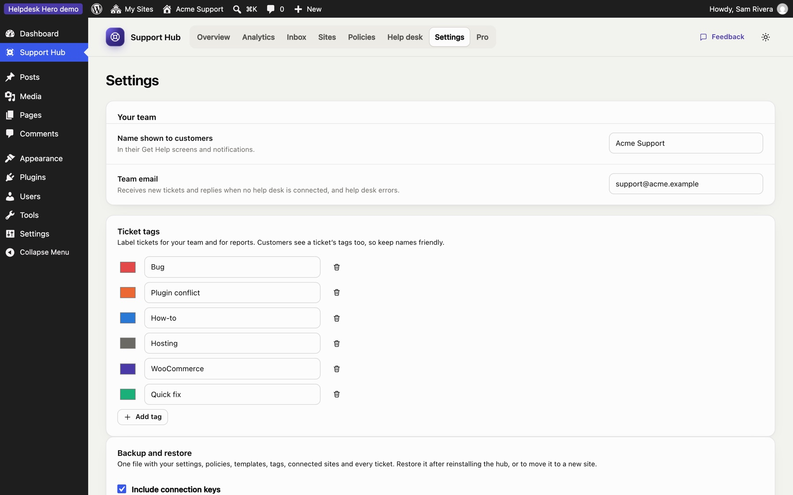
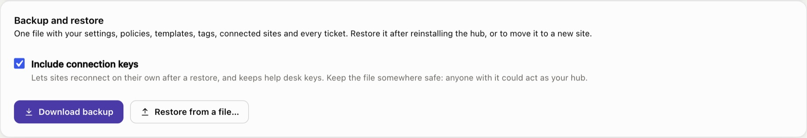

Settings
Settings holds your team details and ticket tags. Your rules for customer sites live under Policies.

Your team#
- Team name: shown to customers in their help center ("Connected to Acme Support") and in emails.
- Team email: where new tickets and customer replies are emailed. Leave it empty to use the site's admin email.
Ticket tags#
Create the tags your team uses to sort tickets. Each has a name and a colour. Customers see tags on their tickets, so choose names you're happy for them to read. Renaming or recolouring a tag updates every ticket that uses it; deleting a tag removes it from tickets.
Who can use the hub#
In the free hub, administrators use the hub. Pro adds a Support Agent role, so team members can work tickets without being administrators of your site, and Supporters, to choose who replies to customers and logs in to their sites, under the name you pick.
Backup and restore#
Download backup saves the whole hub as one JSON file: team settings, your policy, templates, tags, every connected site and every ticket with its history. With Pro, its settings, help desk connection and supporters are included too.

- Include connection keys (on by default) puts each site's connection key and your help desk keys in the file. Then, after a restore at the same address, every site carries on as before: no new codes, and old tickets keep syncing. Keep the file somewhere safe, because anyone with it could act as your hub.
- Restore from a file… replaces everything in the hub with the backup. Use it after reinstalling the hub, or when moving it to a new site. Right after a reinstall, the setup guide also offers Restore a backup instead.
- Moved to a new address? Customer sites still call the old one, so send each of them a new connection code (their tickets stay on their sites).
- Your Pro license key isn't in the backup: activate it again after a restore. Supporters are matched to your team's user accounts by email address.
Uninstalling the hub deletes everything it stored, so download a backup first.
The setup guide#
You can reopen the setup guide at any time from the Overview. It doesn't change anything until you save a step.
Still stuck? Check Troubleshooting and the FAQ, or ask on GitHub. You can also try everything in the live demo.